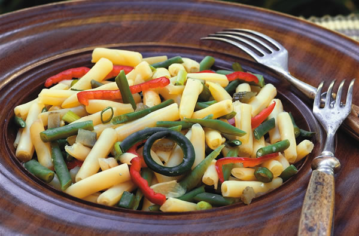
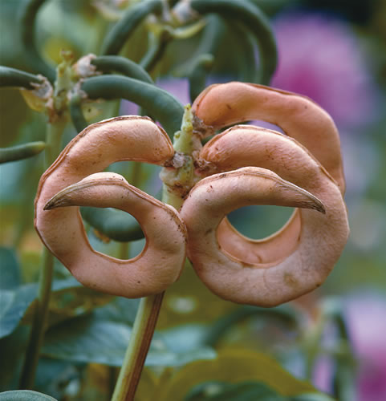
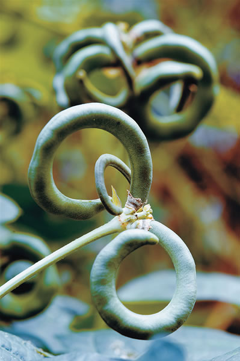

Three Rare Beans
Plant these exceptional beans now to add color and zip to midsummer meals.
By William Woys Weaver
April/May 2006
Gardeners have many delicious bean choices these days, but three heirloom varieties in particular deserve a spot in gardens and kitchens everywhere: the buttery-tasting Beurre de Rocquencourt yellow wax bean; the tiny green Comtesse de Chambord rice bean; and the curly, nutty-flavored pretzel bean.
Yellow Wax Bean
(Beurre de Rocquencourt)
The aristocrat of wax beans, Beurre de Rocquencourt has a delectable buttery taste. When freshly picked from the garden and lightly poached, these beans have no equals. Furthermore, the dry beans are excellent for making soup or refried beans.
Beurre de Rocquencourt is reliably productive: The more you pick the beans, the more the plants produce. One reason for this beans continued popularity is that it matures quickly (55 days or less), and it grows well in full sun or partial shade. Unlike many newer wax bean varieties, the pods stay crisp when cooked.
Wax beans were introduced into France about 1840 under the name Haricot dAlger, because they were presumed to have come from Algeria. From this one pole variety the French developed many better selections, some pole and some dwarf or bush. Rocquencourt is a descendant of that old Algerian strain and has its characteristic black seeds. It also shares a great many physical similarities with the once-popular 19th-century American bush bean called German Dwarf Black Wax, and the two are likely related.
The variety takes its name from Rocquen-court, a town near Ver-sailles. In the 19th and early 20th centuries Rocquencourt was famous for its fine vegetables, so the name carried the connotation of high quality. The bean evolved locally through selection and became fully recognized as a commercial variety in the 1930s.
Cultivating this bush bean is easy: Just plant the seeds in rows, about a foot apart in all directions. They will develop into very sturdy bushes about 2 feet tall, and may need supports once they begin producing beans. Do not allow the pods to touch the ground or slugs and other pests will nibble on them. For seed saving, just let the pods dry on the bush. Once the seeds become brittle, they are ready to harvest and save for next season.
Rice Bean
(Comtesse de Chambord)
Two different beans go by the name rice bean. The one I recommend, Comtesse de Chambord, is a true bean, or Phaseolus vulgaris. (The other rice bean, Vigna umbellate, is a cousin of the cowpea.)
Many people are quite startled by its miniature size when they see a rice bean for the first time. The tiny, young 4-inch pods are so tender and sweet that you can eat them raw or toss them in a mixed bean salad (see Rare Beans Salad, Page 126). They make a beautiful garnish, too. The small, dry beans (shown below) resemble rice when cooked, although the flavor is richer and nuttier, and the texture is much more appealing. Best of all, you dont have to soak rice beans before cooking them, because they take only about 20 to 25 minutes to cook.
Comtesse de Chambord has been around since at least the late 19th century (known then as the Hungarian dwarf rice bean) and remains quite popular in France and Quebec.
This elfin bean is much too delicate for large-scale production, so it has remained something of a chefs delight. Because it does not grow much taller than 8 to 12 inches, Comtesse de Chambord requires a specially protected place in the garden. The plants should be well-staked because they tend to fall over in heavy rains; this ruins the pods both for eating and for seed saving. You can plant Comtesse de Chambord in cold frames with the lids ready for protection should a violent storm arise. This bean also is ideal for growing in a greenhouse, even in winter.
Like Beurre de Rocquencourt, this bean should be allowed to dry in the pod for seed-saving purposes. If the pods are almost dry, you can pull up the plants and hang them upside down in bundles to dry out of direct sunlight. This is a useful seed-saving technique when the weather is wet and humid.
Pretzel Bean
(Vigna unguiculata)
Many of us are familiar with the so-called yard-long cowpeas, but very few people know there is a variety of cowpea that has pods that curl upward and twist back to form a perfect pretzel. The small green pods of the pretzel bean taste deliciously walnutty, and the plants are highly productive. You can even eat the greens when cooked, the tender young leaves and shoots make a wonderfully healthy dish.
The pretzel bean was introduced commercially in the United States in 1893 by W. Atlee Burpee, under the name Rams Horn Bean. Burpee treated it as a vegetable curiosity. Curiosities aside, this unusual cowpea happens to be quite practical, especially for small gardens. Because it grows as a twining vine, it is easy to train on poles or a trellis, taking advantage of vertical, rather than horizontal, space. The dry peas can be saved and cooked like any common black-eyed pea. Also, cowpeas are particularly great for fixing nitrogen in the soil, and the vines make excellent fodder for goats and other livestock.
HIGHLY RECOMMENDED by the Mother Earth News editors:
Heirloom Vegetable Gardening: A Master Gardener’s Guide to Planting, Seed Saving and Cultural History by William Woys Weaver, now on CD. If you want to explore the fabulous flavors, fascinating history and amazing diversity of vegetables, this is the book to start with. Food historian and Mother Earth contributing editor Will Weaver profiles 280 heirloom varieties, with authoritative growing advice and incredible recipes. First published in 1997, Heirloom Vegetable Gardening has since been out of print, with used copies selling online for as much as $300. We are proud to present the original text, with color photos, as a digital book on CD-ROM. Order now.
|
 ROB CARDILLO (2) Kitchen gardeners will love both the pods and the dry beans of the ‘Beurre de Rocquencourt’ yellow wax bean (black seeds) and the green rice bean ‘Comtesse de Chambord’ (white seeds). |
 ROB CARDILLO (2) Originally treated as a “vegetable curiosity,” the unique pretzel bean is prized for the nutty flavor of its pods. For good seed-saving results, allow the pods to dry on the vine. |
 ‘Comtesse de Chambord’ |
|
 |
 |
|